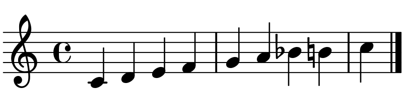

Musical Investigation
Tushaar Kamat
A comparison between hindustani classical music and modal jazz
Created: 2018-03-21 Wed 14:48
Background
Ravi Shankar was an extremely influential sitarist from Bengal, India. He had a distinct playing style characterized by unconventional rhythmic cycles and flowing, but disjunct, melodic lines.

Figure 1: An indian sitar
- Miles Davis was a jazz trumpeter and musician that was well know for developing the modal jazz and jazz fusion genres. His album Kind of Blue is often considered the best jazz record of all time.
- While both of these musicians developed independently and focused on completely different genres, their music actually shares many common links and similarities.
Musical Pieces
- My first piece is Ravi Shankar's live performance of Raag Khamaj, which he performed with his daughter. https://www.youtube.com/watch?v=9xB_X9BOAOU
- My second piece is the Miles Davis quintet performance of All Blues, from his album Kind of Blue. https://www.youtube.com/watch?v=ylXk1LBvIqU
Characteristics of Hindustani Music
- Hindustani music is built on the raga, which literally translates to "color." Ragas are scales and melodies that form the basis for the performance, and their purpose is to form the mood or emotional basis for the music, rather than providing structure as scales do in western music.
- Hindustani music is generally monodic, and the melody is generally accompanied by various instruments, such as the tabla, which is used to create complex polyrhythms.
- The meter of Hindustani music varies greatly between compositions, with meters ranging from simple duple or triple meters to 7 or 14 beat mixed meters.
Traditional Hindustani Instruments

Figure 2: The tanpura: supports the melody with a harmonic drone.
Figure 3: The sitar: primary melodic instrument.

Figure 4: The tablas: primary rhythmic instrument.
Raag Khamaj
The Khamaj is one of the ten Thaats (parent scales) of Hindustani classical music. The improvisational scale for this raga is shown below:

- As seen above, the scale contains 9 notes, which means it does not conform to western scales, which generally contain 8 notes. However, the scale is quite close to the western Mixolydian mode, which matches Raga Khamaj exactly except for an extra B natural in the raga.
Miles Davis, Modal Jazz, and Kind of Blue
- Miles Davis was one of the pioneers of the modal jazz movement, and along with his colleagues John Coltrane, Bill Evans, and Cannonball Adderley, he redefined what jazz music sounded like.
- In Kind of Blue, Davis and his extremely talented band rejected traditional chord progressions in favor of modal scales, and they put a heavy emphasis on improvisation and spontaneity.
- Modal jazz, like most other forms of jazz, originated with the blues, and a lot of traditional blues elements can be found in modal jazz, such as the strophic "Head/Solo/Head" structure. In this structure, the music begins with a "head" that serves as the main chorus, followed by a usually lengthy improvisation section, and finally a return to the head.
So What
- So What is known for having the melody in the bass line, which was very unusual then and still unusual today.

Figure 6: So What melody
- The head is followed by improvisation by each melodic instrument, including the alto saxophone, tenor saxophone, trumpet, piano, and bass.
- The piece is quite simple harmonically, and the piece uses an AABA structure. The only harmonic shift is the switch from the D dorian mode to the E flat dorian mode in the B section.
- The simplicity of So What and other modal jazz pieces was intentional, as Miles Davis wanted to give musicians freedom to improvise without being constrained by a strict chord progression.
Musical Links
- Despite the great difference in cultures and location between these two
musical styles, they share many similarities.
- Both pieces diverge from traditional western chord progressions in the harmonies and tonality, with Raag Khamaj using the raga and So What using modes.
- Both pieces have a similar structure, with an opening melody followed by improvisation.
- Both pieces share similar melodic constructs, such as quickly ascending or descending arpeggios and phrases, use of the chromatic scale, and bent notes in phrases.


Harmony and Tonality
- So What, as mentioned before, has a very uniform harmonic structure, and
the only modulation is the half-step movement from D dorian to E flat dorian
in the B section.
- The first solo by Davis (see below) centers around the D minor pentatonic.
- Davis leaves lots of open spaces in his solo, which are filled by open voicings centering around 4th chords, played by the pianist Bill Evans.
- As the solo progresses, Davis transitions from the minor pentatonic to a more linear style focusing on the dorian scale.
- In the his second transition to the B section, Davis enters early with a high, extended, dissonant A flat. Overall however, Davis tends to stay in the dorian mode or pentatonic scale, but he occasionaly breaks from the scale, such as with the "blues note".

Harmony and Tonality (Continued)
- Shankar's performance of Raag Khamaj similarly revolves around a single